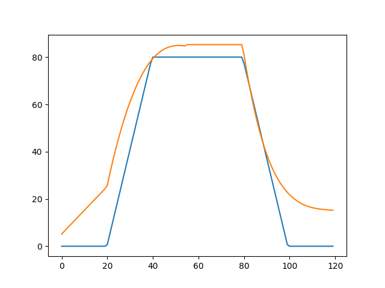
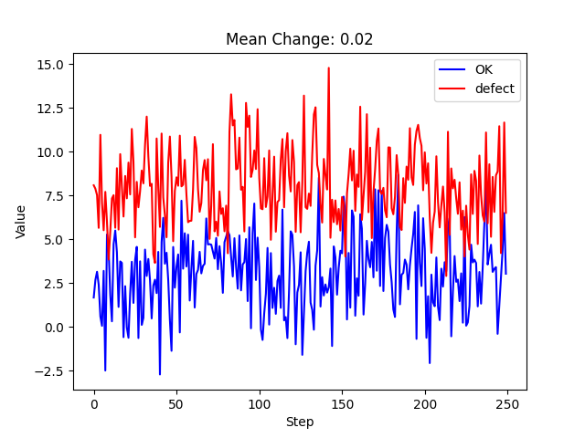
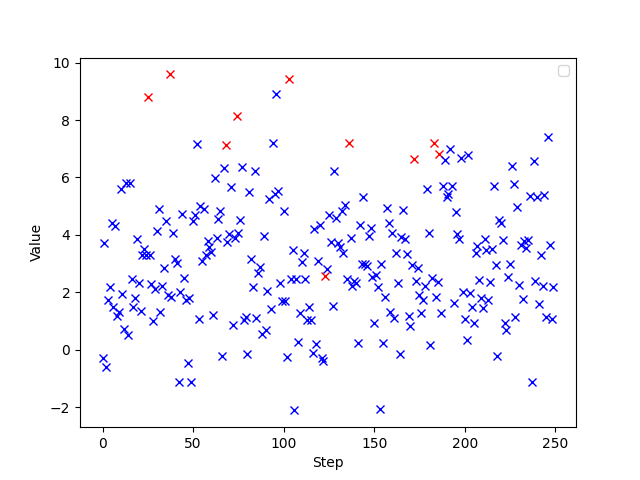
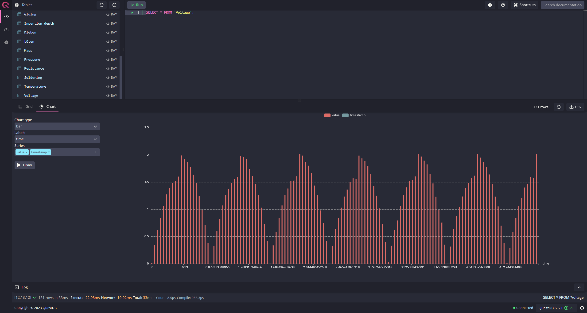

Tutorials#
This page gives you an overview of the general usage paradigms of SmartManPy. We have prepared additional (complete) examples that demonstrate various capabilities. These examples can be found in manpy/simulation/Examples and here: Full examples
We recommend the following order:
Quality_Control.py
Dependency.py
ExampleTS.py
Conditional_Failure.py
Interpolation.py
Data_Extraction.py
Introduction#
Basic principles#
The original ManPy package is based on the SimPy discrete event simulation. If you are already familiar with SimPy, you should recognize many paradigms.
The start and finish point of a production line is a Source and Exit:
1 from manpy.simulation.imports import Machine, Source, Exit
2
3 start = Source("S1", "Source",
4 interArrivalTime={"Fixed": {"mean": 0.4}},
5 entity="manpy.Part", capacity=1)
6
7 exit = Exit("E1", "Exit1")
Then, we can add a machine to our small example. Our machine has a mean processing time of 0.8 seconds, with a standard deviation of 0.075 seconds. However, the minimal and maximal possible time is set to 0.425 and 1.175 seconds:
1m1 = Machine("M1", "Machine1",
2 processingTime={"Normal":
3 {"mean": 0.8, "stdev": 0.075, "min": 0.425, "max": 1.175}
4 })
In order to complete our small example, we need to define the routing between the components. This is done for each component individually:
1start.defineRouting(successorList=[m1])
2m1.defineRouting(predecessorList=[start], successorList=[exit])
3exit.defineRouting(predecessorList=[m1])
We can now run and evaluate our simulation, e.g. for 50 time steps. To do this, we use the runSimulation function defined in Globals.py. This function needs a list with all simulated objects (machines, features/timeseries, failures, …) and the maximum simulation time.
1from manpy.simulation.core.Globals import runSimulation, getFeatureData
2
3maxSimTime = 50
4objectList = [start, m1, exit]
5
6runSimulation(objectList, maxSimTime)
7
8df = getFeatureData([m1])
9df.to_csv("ExampleLine.csv", index=False, encoding="utf8")
10
11print(f"Produced: {exit.numOfExits}\\
12 Simulationszeit: {maxSimTime}")
Attention
The order of the objects in the object list is important! If there exist dependencies (e.g. temporal) between simulated objects, you need to reflect this in the object list. This is especially important for functional dependencies in features (see Functional dependencies)
Adding more machines#
Our example currently consists of only one production step. Since ManPy was designed to simulate production lines, let’s see what it takes to add more machines to a simulation. First of all, we need to define a second machine:
1m2 = Machine("M2", "Machine2",
2 processingTime={"Normal":
3 {"mean": 2.0, "stdev": 0.1, "min": 1.7, "max": 2.3}
4 })
Now we need to define how the output of Machine1 proceeds to Machine2. ManPy is capable of simulating complex routings, e.g. using conveyor belts. This makes sense if you are interested in the overall behaviour of the production line. For this example, we’ll stick to the simplest connection between two machines: the queue. Queues in ManPy act as a simple buffer with a certain capacity. In order to work correctly, we also need to update the routing of the production line and add the new objects to the objectList:
1q1 = Queue("Q1", "Queue1", capacity=10)
2
3start.defineRouting(successorList=[m1])
4m1.defineRouting(predecessorList=[start], successorList=[q1])
5q1.defineRouting(predecessorList=[m1], successorList=[m2])
6m2.defineRouting(predecessorList=[q1], successorList=[exit])
7exit.defineRouting(predecessorList=[m2])
8
9objectList = [start, m1, m2, q1, exit]
Improved Routing#
The default routing mechanism requires you to manually set the predecessors and successors of objects, with makes multiple definitions necessary if you add an object to the production line. Furthermore, if you decide to change the order or want to (temporarily) remove a station, you also need to make changes at multiple locations. As an improvement, we added an easier way of defining the routing that’s based on list. The whole production line is defined in one list. Each “stage”, i.e. all machines at the same level, are contained in separate lists:
1routing = [
2 [start],
3 [m1],
4 [q1],
5 [m2],
6 [exit]
7]
It is also possible to add multiple machines or sources to the same level.
To actually perform the routing definition, you need to use generate_routing_from_list defined in core/ProductionLineModule.py:
1from manpy.simulation.core.ProductionLineModule import generate_routing_from_list
2
3generate_routing_from_list(routing)
Using this approach for routing, you can easily change the order or remove parts of the production line with minimal changes.
Advanced usage#
The following sections provides an introduction into the more advanced concepts of SmartManpy.
Features#
Features are our most important extension to the original ManPy and also the most complex one.
Basic usage#
Features are a sub-class of ObjectProperty, which is a generic base class for all kinds of data a machine/object can generate during production. We currently have two sub_classes of ObjectProperty: Features and TimeSeries. While TimeSeries is concerned with (as the name suggests) time series data that is generated during production (e.g. temperature curves), Feature is concerned with properties that are measured/logged once for each entity at a production station. In the following section, we will explore the most important mechanics of the Feature class.
The following statement shows the most basic definition of a Feature:
feature1 = Feature(id="f1",
name="Feature1",
victim=m1,
distribution={"Feature": {"Normal": {"mean": 0, "stdev": 1.0}}}
)
This statements assigns a new Feature with the internal id “f1” and name “Feature1” (used for data output) to Machine m1. The feature values are randomly drawn from a normal distribution with mean 0 and standard deviation 1. It is possible to select different distributions and to control the behaviour of the underlying distribution over the course of a simulation. Further explanations for these mechanics are provided in Distributions and StateControllers.
Functional dependencies#
We can of course add many more features to a machine. Sometimes, there exist certain relationships between features, e.g. physical dependencies. We can model these dependencies using the “dependency” parameter:
feature2 = Feature(id="f2",
name="Feature2",
victim=m1,
dependent={"Function": "10*x + 3", "x": feature1}
distribution={"Feature": {"Normal": {"stdev": 0.1}}}
)
Here, we define a functional dependency between feature2 and feature1, in this case the linear function 10x + 3. To simulate eventual measurement errors, we can apply a standard deviation to this dependency, in this case 0.1. However, it is also possible to have strict functional dependencies between features by simply not passing anything as an argument for distribution:
feature2 = Feature(id="f2",
name="Feature2",
victim=m1,
dependent={"Function": "10*x + 3", "x": feature1}
)
Attention
The order in the object list matters! If you define features with functional dependencies, you need to know that the order in the object list that’s passed to runSimulation is important! A feature that depends on other features values needs these features to be generate before itself. To ensure this, you need to place the features that are used in functional dependencies before the features that use them.
Random walks#
Sometimes, Features depend on the previous value, e.g. Temperatures. To model this, we can use random walks. When the random walk mode is activated, the randomly drawn feature value is added to the last feature value. A Feature generated using a random walk can be defined as follows:
random_walk_feature = Feature(id="ftr_rw",
name="Feature_Random_Walk",
victim=m1,
random_walk=True,
start_value=20,
distribution={"Feature": {"Normal": {"mean": 0, "stdev": 1.0}}})
Feature “Feature_Random_Walk” has a starting value of 20. For each data point, a value is drawn from a normal distribution with mean 0 and standard deviation 1 and then added to the current value. The starting value is 20, which can be interpreted as the “mean” of the random walk.
Time Series#
Basic usage#
TimeSeries represents the second type of ObjectProperty in our ManPy Extension. At each production step, TimeSeries generates a configurable amount of data points in a certain time frame. Let’s have a look at a simple example:
ts_features = Feature(id="ftr_ts,
name="Feature_Time_Series",
distribution={"Function": {(0, 2): "0.5*x + 2"},
"DataPoints": 20,
"Feature": {"Normal": {"stdev": 0.1}}
}
)
This example generates a time series in which the data points are 0.1 second apart. The time series is defined in the interval [0, 2], in which 20 data points are sampled. The resulting values are governed by a linear function. At each data point in the time series, a standard deviation of 0.1 is applied to model small differences between production steps.
Multiple Intervals#
It is possible to define multiple intervals to further customize the mathematical description of the time series:
ts_features = Feature(id="ftr_ts,
name="Feature_Time_Series",
distribution={"Function": {(0, 1): "0.5*x + 2", (1, 2): "0.1*x + 2"},
"DataPoints": 20,
"Feature": {"Normal": {"stdev": 0.1}}
}
)
Now, the TimeSeries behaves differently from 1 to 2 than from 0 to 1.
Interpolation#
The aforementioned ways of creating time series are quite powerful, but only if a functional relationship ís known. Sometimes, only certain values are known, which makes interpolation a very useful tool for these cases:
ts_features = Feature(id="ftr_ts,
name="Feature_Time_Series",
distribution={"Function": {(0, 1): "0.5*x + 2",
(1, 3): [[1, 1.5, 2, 3], [4, 4.2, 4.3, 5.1]]},
"DataPoints": 20,
"Feature": {"Normal": {"stdev": 0.1}}
}
)
In this example, we provide the interpolation algorithm 4 data points in the interval in which it interpolates. No matter how small or large the interval is, the interpolation algorithm needs at least 4 values. The data points for interpolation can also be determined by a Feature with all its customization possibilities:
1 endVal = Feature(id="endVal",
2 name="endVal",
3 victim=m1,
4 distribution={"Feature": {"Normal": {"mean": 5.2, "stdev": 0.1}}}
5 )
6
7
8ts_features = Feature(id="ftr_ts,
9 name="Feature_Time_Series",
10 distribution={"Function": {(0, 1): "0.5*x + 2",
11 (1, 3): [[1, 1.5, 2, 3], [4, 4.2, 4.3, "EndVal"]]},
12 "EndVal": endVal,
13 "DataPoints": 20,
14 "Feature": {"Normal": {"stdev": 0.1}}
15 }
16 )
In this example, the final value for interpolation is received from Feature “endVal”.
Example plot#
The following plot shows two complex TimeSeries that were created using both interpolation and functional dependencies:
{kind=link}
Quality Control#
Quality control is a standard process in manufacturing. Therefore, we added the option for quality control to machines. As a result, machines can either have an additional quality control step at the end of their production step or be a standalone quality control instance. The condition for quality control can be set via a custom defined function, which is simply called “condition” in the following example. We can access the currently active entity in a machine with the following statement:
activeEntity = self.getActiveEntity()
We can then use any simulated value of the entity as measurement for quality control, e.g. feature values or internal labels. The condition function must return True if a defect was found, otherwise False must be returned. In the following example, we simply check if a given Feature value is inside a certain interval ([3, 7]).
1def condition(self):
2 # self is w.r.t. to the machine in which we apply the condition!
3 activeEntity = self.getActiveEntity()
4
5 if activeEntity.features[0] > 7 or activeEntity.features[0] < 3:
6 return True
7 else:
8 return False
In this example, we had to access the feature value by index, which is usually very tedious. We therefore added the function “get_feature_values_by_id” in Globals.py, that let’s you access certain feature values of an entity by the feature ID:
1from manpy.simulation.core.Globals import get_feature_values_by_id
2
3def condition(self):
4 # self is w.r.t. to the machine in which we apply the condition!
5 activeEntity = self.getActiveEntity()
6
7 # Access first element since function returns a list
8 feature_value = get_feature_values_by_id(activeEntity, ["f1"])[0]
9
10 if feature_value > 7 or feature_value < 3:
11 return True
12 else:
13 return False
Failures#
Basic usage#
Despite not being desired, failures play a big role in production lines. Therefore, in order to accurately model a production line, we must be able to model failures in a sophisticated way. ManPy already provides such a complex model through its Failure classe. The following example demonstrates a simple ManPy Failure:
simple_failure = Failure(id="Flr0",
name="SimpleFailure",
victim=m1,
distribution={"TTF": {"Fixed": {"mean": 0.8}},
"TTR": {"Normal": {"mean": 100, "stdev": 25, "min":50,
"probability": 0.01}}})
This failure is potentially triggered every 0.8 seconds, which is determined by the time-to-failure (TTF) distribution. At each potential trigger point, a time-to-repair (TTR) is calculated, which determines the down time of the victim (i.e. the machine at which the failure occurs) Since we additionally passed a probability value to the TTR distribution, we only get actual downtime with a 1% chance. If we don’t pass the probability value, the frequency of the failure is solely determined by TTF.
Conditional failures#
A more flexible way of triggering failures are conditional failures. Conditional failures are comparable to Quality Control in Machines. You implement the condition as a function and pass it to the failure using the “conditional” parameter:
1# Any function can be employed as the condition for a Failure to occur
2# You can utilize any simulation values for the condition
3# Return True to let the Failure occur
4
5def condition(self):
6 value_1 = Ftr1.get_feature_value()
7 value_2 = Ftr2.get_feature_value()
8
9 if (value_1 + 20 * value_2) > 200:
10 return True
11 else:
12 return False
13
14conditional_failure = Failure(victim=m1,
15 conditional=condition,
16 distribution={"TTR": {"Fixed": {"mean": 30}}})
Here, the triggering of the failure is solely controlled by the function condition, we only need to specify TTR. Similarly to Quality Control, we can access the feature values to determine whether a failure should be triggered or not.
Tip
A Failure is automatically resolved after TTR is passed. Additionally, ManPy offers the possibility to model repairmen, which can be used to model constrained maintenance resources. In our case, we always assume that a failure can be repaired in the given time period, which may be unrealistic.
Distributions and StateControllers#
Using our StateControllers in combination with distributions allows for complex control over the lifecycle behaviour of features. This can be used to model data drifts or distribution shifts. The StateControllers are relatively generic and would easily allow extensions to other use cases, but we focus on controlling different probability distributions. The motivation for StateControllers was the need for modelling changing behaviour of features depending on their wear. If a machine part (e.g. a bearing) shows signs of wear, it’s underlying probability distribution changes slightly. In the case of a bearing, this could be modelled using a steadily increasing standard deviation. In the following, the different types of yet implemented StateControllers are explained.
SimpleStateController#
SimpleStateController is the most simple case of a StateController (surprise!). It models a simple “break point”, e.g. a very different behaviour of a machine part after it broke. This can be achieved using the following piece of code:
1dists = [{"Time": {"Fixed": {"mean": feature_cycle_time}},
2 "Feature": {"Normal": {"mean": 0, "stdev": 1}}},
3 {"Time": {"Fixed": {"mean": feature_cycle_time}},
4 "Feature": {"Normal": {"mean": 100, "stdev": 10}}}]
5
6boundaries = {(0, 25): 0, (25, None): 1}
7
8controller = SimpleStateController(states=dists, boundaries=boundaries, wear_per_step=1.0)
9
10f3 = Feature("f3", "F3", victim=m2, distribution_state_controller=controller)
This SimpleStateController controls the distributions of Feature F3. The actual behaviour is defined in “boundaries”, which controls the exact distribution that should be used at a certain amount of wear. In each production step, wear_per_step is added to the total amount of wear. If the total amount of wear crosses a boundary, a different distribution is used for Feature F3. In this case, the break point is defined at 25 units of wear, which leads to a new normal distribution with a drastically different mean (100).
Tip
By default, a StateController is reset to its initial state after the victim (= the machine) of its assigned feature has ended a failure, i.e. it’s been repaired. This behavior can be deactivated through the “reset_distributions” parameter of Feature.
ContinuosNormalDistribution#
SimpleStateController is very generic by simply retrieving the element in the states list that is determined by boundaries. ContinuosNormalDistribution is a more specialized StateController. It is specifically designed for Features that are generated using a Gaussian distribution. In ContinuosNormalDistribution, we assume that wear immediately influences the underlying probability distribution, even if it’s by a very small amount. We model this by adding a certain amount (mean_change_per_step) in each production step to the mean of the normal distribution. Additionally, the break point mechanic from SimpleStateController is still present. However, it’s now simplified such that the normal distribution after the defect occurred is only defined by a mean and STD:
1mean_change_per_step = 0.05
2controller1 = ContinuosNormalDistribution(wear_per_step=0.1,
3 mean_change_per_step=mean_change_per_step,
4 initial_mean=2.0,
5 std=2.0,
6 break_point=10,
7 defect_mean=7.0,
8 defect_std=3.0
9 )
10
11# not using a break point
12controller2 = ContinuosNormalDistribution(wear_per_step=0.7,
13 mean_change_per_step=mean_change_per_step,
14 initial_mean=2.0,
15 std=2.0,
16 break_point=None,
17 defect_mean=None,
18 defect_std=None
19 )
20
21f3 = Feature("f3", "F3", victim=m2, reset_distributions=True, distribution_state_controller=controller1)
22# f3 = Feature("f3", "F3", victim=m2, reset_distributions=True, distribution_state_controller=controller2)
The typical behaviour of ContinuosNormalDistribution can be seen in the following plot. It contains the evolution of the feature value of two ContinuosNormalDistribution StateControllers over the span of 250 steps.
{kind=link}
RandomDefectStateController#
SimpleStateController and ContinuosNormalDistribution are best used to model properties related to wear. But sometimes, failures can occur without obvious reason. For these cases, we designed RandomDefectStateController, which models a defect using a Bernoulli distribution. If the Bernoulli distribution returns 1, it selects a defect StateController from a list, otherwise it uses a “ok” StateController that model normal behaviour.
1 mean_change_per_step = 0.02
2
3 ok_controller = ContinuosNormalDistribution(wear_per_step=0.7,
4 break_point=None,
5 mean_change_per_step=mean_change_per_step,
6 initial_mean=3.0,
7 std=2.0,
8 defect_mean=7.0,
9 defect_std=3.0
10 )
11
12 defect_controller1 = ContinuosNormalDistribution(wear_per_step=0.7,
13 mean_change_per_step=mean_change_per_step,
14 initial_mean=7.0,
15 std=2.0,
16 break_point=None,
17 defect_mean=None,
18 defect_std=None
19 )
20
21 defect_controller2 = ContinuosNormalDistribution(wear_per_step=0.1,
22 mean_change_per_step=mean_change_per_step,
23 initial_mean=1.0,
24 std=2.0,
25 break_point=None,
26 defect_mean=None,
27 defect_std=None
28 )
29
30 random_defect_controller = RandomDefectStateController(failure_probability=0.05,
31 ok_controller=ok_controller,
32 defect_controllers=[defect_controller1, defect_controller2])
The typical behavior of a RandomDefectStateController looks similar to the following plot (Red crosses = defect):
{kind=link}
The defect_controllers list can contain multiple StateControllers, which can be used to model minor deviations from the planned behaviour in multiple directions, e.g. too much or not enough glue. RandomDefectController introduces an additional way of performing quality control. Depending on the distribution that gets selected (ok/defect), an internal label is set to either True or False, indicating whether a defect is present or not. This label can be used for quality control, which should create more non-obvious relationships:
1def quality_control(self):
2 activeEntity = self.Res.users[0]
3
4 if any(activeEntity.labels):
5 return True
This function marks an entity as “defect” if at least one feature was the result of a “defect” probability distribution.
Tip
StateControllers are highly customizable. If necessary, you can write your own StateController that perfectly fits you demands. The interface is defined in core/StateController.py.
Export#
SmartManPy offers two ways to export the simulated data: Pandas DataFrames and Databases.
Pandas DataFrames#
To export the data to a Pandas DataFrame, you can use the getFeatureData and getTimeSeriesData functions:
1m1_data = getFeatureData([m1])
2print(m1_data.to_string(index=False), "\n")
3
4# With 'time=True', timestamps of the feature values are included in the DataFrame
5m1_data_time = getFeatureData([m1], time=True)
6print(m1_data_time.to_string(index=False), "\n")
7
8# The function supports multiple machines
9both = getFeatureData([m1, m2])
10print(both.to_string(index=False), "\n")
11
12# To retrieve timeseries data from the simulation, utilize the getTimeSeriesData function
13# The function accepts a timeSeries and returns a DataFrame representing that timeseries
14ts_data = getTimeSeriesData(ts_features)
While getFeatureData accepts machines as input, getTimeSeriesData accepts a TimeSeries instance. From there on, Pandas Dataframes offer a variety of exports, e.g. to CSV.
Databases#
Additionally, we support data export to QuestDB and Kafka:
1from manpy.simulation.core.Database import ManPyQuestDBDatabase, ManPyKafkaConnection
2
3db = ManPyQuestDBDatabase()
4# alternatively: db = ManPyKafkaConnection(...)
5
6runSimulation(objectList, maxSimTime, db=db)
In QuestDB, you can use SQL queries to access the datapoints. QuestDB also has plotting capabilities, as you can see in the following screenshot:
{kind=link}
Tip
Our Database interface is highly customizable. If necessary, you can write your own DB interface that perfectly fits you demands. The interface is defined in core/Database.py.
ProductionLineModules#
The definition of long and complex production lines can get very extensive and confusing. To improve the clarity of complex production lines, we added ProductionLineModules, which allow the encapsulation of parts of the production line. A ProductionLineModule can contain an arbitrary amount of simulatable objects. The main advantage is the possibility to define complex production stations in a different file, without the need for importing a large amount of objects. ProductionLineModules only need to know their internal routing, the routing with external components is done via the known lists or using defineRouting.
The most simple ProductionLineModule is SequentialProductionLineModule, which simply takes the routing between objects in sequential order and applies it. This type of module should be enough to cover most of the needs for such modules. If you need additional functionality, you can write custom ProductionLineModule by inheriting from core/ProductionLineModule.
The following example demonstrate the definition of a very basic module.
1from manpy.simulation.imports import Machine, Feature
2from manpy.simulation.core.ProductionLineModule import SequentialProductionLineModule
3
4m1 = Machine("M1", "Machine1",
5 processingTime={"Normal":
6 {"mean": 0.8, "stdev": 0.075, "min": 0.425, "max": 1.175}
7 })
8
9feature1 = Feature(id="f1",
10 name="Feature1",
11 victim=m1,
12 distribution={"Feature": {"Normal": {"mean": 0, "stdev": 1.0}}}
13 )
14
15internal_routing = [[m1]]
16features = [feature1]
17
18example_module = SequentialProductionLineModule(internal_routing, features, "ExampleModule")
This module can then be imported into other files and easily incorporated in the overall definition of a production line.
1from manpy.simulation.core.ProductionLineModule import generate_routing_from_list
2from FILENAME import example_module
3
4object_list = [...]
5
6example_module_objects = example_module.getObjectList()
7
8object_list.extend(example_module_objects)
9
10routing = [
11 ...
12 [...],
13 [example_module],
14 [...],
15 ...
16]
17
18generate_routing_from_list(routing)
Since all objects of the module need to be added to the global object list of the production line, we need to access the module’s object. We can conveniently do so by using example_module.getObjectList(). When defining the routing, a ProductionLineModule behaves like every Machine, Source, Exit, etc.